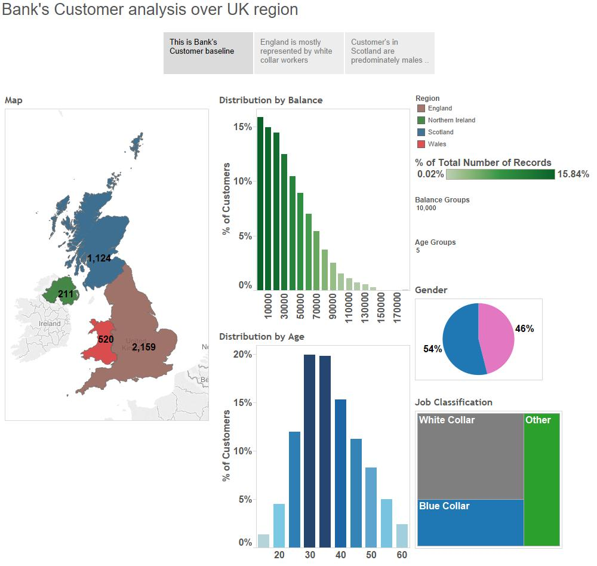

Visualization of Historic Ashes Cricket Series
Visualization Determining Antibiotic Effectiveness
Visualizing socio-economic parameters of countries to determine most influencing parameters for Human Development Index (HDI)
Visualization of Bank's Customer analysis over UK region

The visualization above presents the log MIC value for 3 drugs namely Neomycin, Penicillin and Streptomycin plotted against a list of Bacteria.
The different colors represent the different antibiotics.
The lower the MIC value, the better the performance of the drug against that bacteria.
The positive and the negative gram stained bacteria have been split into 2 columns and represented using different symbols.
Since the range of the values were quite wide, we have taken the log (base 10) of those value to represent them visually.
Multiple bars are presented in order to compare which antibiotics work the best for that particular bacteria.
Looking at the graph, the best antibiotic for a particular bacteria can be determined.